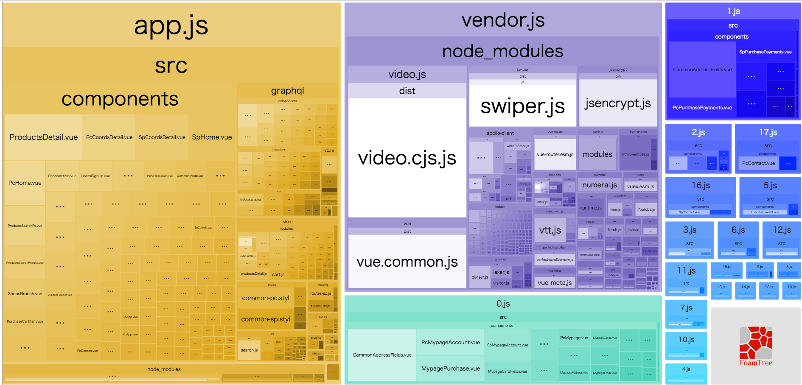
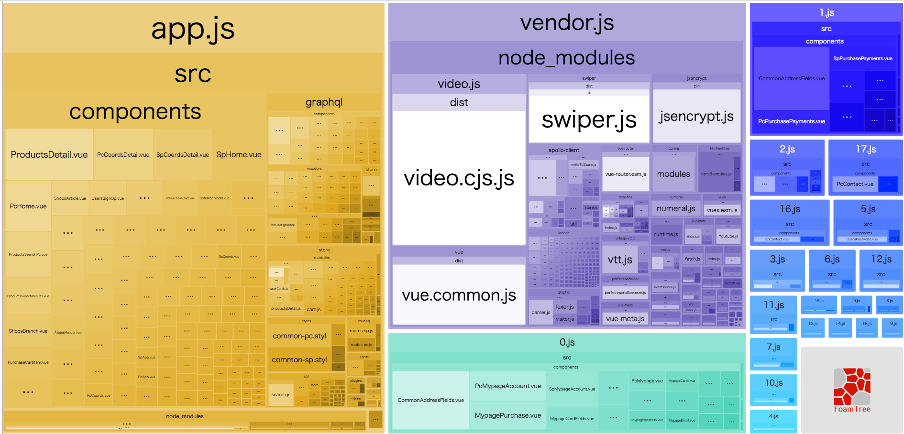

# 新サービスLaigで使った
Vue.jsのパフォーマンス術
[VEGA Tech Meetup #3](https://vega-tech.connpass.com/event/104581/)
by [@melo15](https://twitter.com/melo15) - VEGA corporation
## 軽い自己紹介
### 大津 直樹 Naoki Otsu [@melo15](https://twitter.com/melo15)
- これまで主にフロントエンド(JavaScript, HTML, CSS)
- ベガ社は、2018年2月にJoin🎉
- Laig(ライグ)のフロントエンド担当してます
 ### [https://laig.jp](https://laig.jp)
- 色んなショップの家具や雑貨が1箇所で見れるECメディア
- オンライン(Laig)とオフライン(実店舗)を行き来して、より良いユーザー体験を実現する目的
- 2018年10月に正式オープン🍻
### [https://laig.jp](https://laig.jp)
- 色んなショップの家具や雑貨が1箇所で見れるECメディア
- オンライン(Laig)とオフライン(実店舗)を行き来して、より良いユーザー体験を実現する目的
- 2018年10月に正式オープン🍻
Laigの技術
```json
{
"フロントエンド": {
"フレームワーク": "Vue.js, Vuex",
"ライブラリ": "Apollo GraphQL",
"テストツール": "Jest"
},
"サーバーサイド": "Rails, GraphQL",
"iOS": "Swift",
"Android": "Kotlin",
"インフラ": "AWS(EC2, S3, ...etc)",
"モニタリング": "Sentry, Datadog",
"環境構築": "Docker",
"CI": "Travis CI"
}
```
## アジェンダ
Laigのパフォーマンス改善で主にやったこと
- AWS関連
- リクエスト数の削減
- バンドルサイズ圧縮
- キャッシュ対策
- UX
## AWS関連
# 画像のリサイズ
- [CloudFront & Lambda@Edge](https://aws.amazon.com/jp/blogs/news/resizing-images-with-amazon-cloudfront-lambdaedge-aws-cdn-blog/) で画像をリサイズ
- ` ` のような指定をすると
AWS側でリサイズした画像を生成して配信してくれる
- S3に置いているのは大きい元画像1つだけ
- その画面に適した縦横サイズ、容量で提供できる
- リサイズした画像を別で準備する必要がない👍
# WebP配信
- WebPはGoogleが開発した、トラフィック量軽減を目的とした静止画フォーマット → 軽量
- [CloudFront & Lambda@Edge](https://aws.amazon.com/jp/blogs/news/resizing-images-with-amazon-cloudfront-lambdaedge-aws-cdn-blog/)は、設定で[WebP変換](https://techlife.cookpad.com/entry/2018-05-25-lambda-edge)が可能
→ Chrome/AndroidブラウザにはWebP、その他のブラウザはjpg, png, gifで提供
- 例) あるメイン画像 550KB → 200KBに削減
## 静的ファイルの圧縮配信
- JS,CSS,画像の静的ファイルは、基本的にS3へ
- S3のファイルを、CloudFront経由でgzip配信
- gzipによってオリジナルの[4分の1以下のサイズ](https://docs.aws.amazon.com/ja_jp/AmazonCloudFront/latest/DeveloperGuide/ServingCompressedFiles.html)になることも
## リクエスト数の削減
# [vue-intersect](https://github.com/heavyy/vue-intersect)の遅延ロード
- [Intersection Observer API](https://developer.mozilla.org/en-US/docs/Web/API/Intersection_Observer_API) を使ったVueコンポーネント
- 画面内に表示された画像だけリクエストが走るようになる
- TOPページのFirst Viewのみ取得するようにして、画像リクエスト数を29 → 13に減少
- IE11, Safari, iOS Safari, Android Browser4系以下は対応してないので、[polyfill](https://www.npmjs.com/package/intersection-observer)を読ませる必要がある
## バンドルサイズ圧縮
# バンドルサイズ圧縮
- 元々1つだったPC/SPのリポジトリを分割運用へ → 容量削減
- [コンポーネントの遅延ローディング](https://router.vuejs.org/ja/guide/advanced/lazy-loading.html)を導入
→ 頻繁に訪れないページのコンポーネントは初期ロードから除外
コンポーネント遅延ローディングの実装方法
```js
// よく訪れるページのコンポーネント
import Home from '@/views/Home';
// あまり訪れないページのコンポーネント
const Help = () => import('@/views/Help');
// 上記のように分けてからnew Routerする
new Router({...});
```
- [webpack-bundle-analizer](https://github.com/webpack-contrib/webpack-bundle-analyzer)を使うと、JSの依存関係、バンドルサイズの測定が出来て良い💮

## キャッシュ対策
# キャッシュ対策
- ServiceWorker(PWA)による[ファイルの事前キャッシュ](https://developers.google.com/web/ilt/pwa/caching-files-with-service-worker)を導入
- Laigは[Vue CLI](https://cli.vuejs.org/)を使っていたのでvue.config.jsの`'pwa'`を設定
- 内部では、Googleの[Workbox](https://developers.google.com/web/tools/workbox/guides/get-started)が使われていて、js, css, 画像を事前にキャッシュ → 2度目のアクセス時の改善へ
- [apollo-cache-persist](https://github.com/apollographql/apollo-cache-persist)(GraphQL)の導入 → localStorageにデータをcacheして初期表示を早くしてくれる
## UX
# UX
- Skeleton Screenを主要ページに追加
- コンテンツ読み込み完了までは、うっすらグレイのアニメーションを表示 → 真っ白の時間を少なく
- Skeleton Screen用コンポーネントを作って使い回した
# まとめ
- AWS系での改善は、全ページに影響があって強力
- [Vue CLI](https://cli.vuejs.org/)のレールに乗ってServiceWorker導入も比較的簡単に
- Vue.jsはパフォーマンス改善系の外部コンポーネントもあったりするので、機能だけじゃなくパフォーマンスにも目を向けると良さそう
# ご静聴
` のような指定をすると
AWS側でリサイズした画像を生成して配信してくれる
- S3に置いているのは大きい元画像1つだけ
- その画面に適した縦横サイズ、容量で提供できる
- リサイズした画像を別で準備する必要がない👍
# WebP配信
- WebPはGoogleが開発した、トラフィック量軽減を目的とした静止画フォーマット → 軽量
- [CloudFront & Lambda@Edge](https://aws.amazon.com/jp/blogs/news/resizing-images-with-amazon-cloudfront-lambdaedge-aws-cdn-blog/)は、設定で[WebP変換](https://techlife.cookpad.com/entry/2018-05-25-lambda-edge)が可能
→ Chrome/AndroidブラウザにはWebP、その他のブラウザはjpg, png, gifで提供
- 例) あるメイン画像 550KB → 200KBに削減
## 静的ファイルの圧縮配信
- JS,CSS,画像の静的ファイルは、基本的にS3へ
- S3のファイルを、CloudFront経由でgzip配信
- gzipによってオリジナルの[4分の1以下のサイズ](https://docs.aws.amazon.com/ja_jp/AmazonCloudFront/latest/DeveloperGuide/ServingCompressedFiles.html)になることも
## リクエスト数の削減
# [vue-intersect](https://github.com/heavyy/vue-intersect)の遅延ロード
- [Intersection Observer API](https://developer.mozilla.org/en-US/docs/Web/API/Intersection_Observer_API) を使ったVueコンポーネント
- 画面内に表示された画像だけリクエストが走るようになる
- TOPページのFirst Viewのみ取得するようにして、画像リクエスト数を29 → 13に減少
- IE11, Safari, iOS Safari, Android Browser4系以下は対応してないので、[polyfill](https://www.npmjs.com/package/intersection-observer)を読ませる必要がある
## バンドルサイズ圧縮
# バンドルサイズ圧縮
- 元々1つだったPC/SPのリポジトリを分割運用へ → 容量削減
- [コンポーネントの遅延ローディング](https://router.vuejs.org/ja/guide/advanced/lazy-loading.html)を導入
→ 頻繁に訪れないページのコンポーネントは初期ロードから除外
コンポーネント遅延ローディングの実装方法
```js
// よく訪れるページのコンポーネント
import Home from '@/views/Home';
// あまり訪れないページのコンポーネント
const Help = () => import('@/views/Help');
// 上記のように分けてからnew Routerする
new Router({...});
```
- [webpack-bundle-analizer](https://github.com/webpack-contrib/webpack-bundle-analyzer)を使うと、JSの依存関係、バンドルサイズの測定が出来て良い💮

## キャッシュ対策
# キャッシュ対策
- ServiceWorker(PWA)による[ファイルの事前キャッシュ](https://developers.google.com/web/ilt/pwa/caching-files-with-service-worker)を導入
- Laigは[Vue CLI](https://cli.vuejs.org/)を使っていたのでvue.config.jsの`'pwa'`を設定
- 内部では、Googleの[Workbox](https://developers.google.com/web/tools/workbox/guides/get-started)が使われていて、js, css, 画像を事前にキャッシュ → 2度目のアクセス時の改善へ
- [apollo-cache-persist](https://github.com/apollographql/apollo-cache-persist)(GraphQL)の導入 → localStorageにデータをcacheして初期表示を早くしてくれる
## UX
# UX
- Skeleton Screenを主要ページに追加
- コンテンツ読み込み完了までは、うっすらグレイのアニメーションを表示 → 真っ白の時間を少なく
- Skeleton Screen用コンポーネントを作って使い回した
# まとめ
- AWS系での改善は、全ページに影響があって強力
- [Vue CLI](https://cli.vuejs.org/)のレールに乗ってServiceWorker導入も比較的簡単に
- Vue.jsはパフォーマンス改善系の外部コンポーネントもあったりするので、機能だけじゃなくパフォーマンスにも目を向けると良さそう
# ご静聴
ありがとうございました